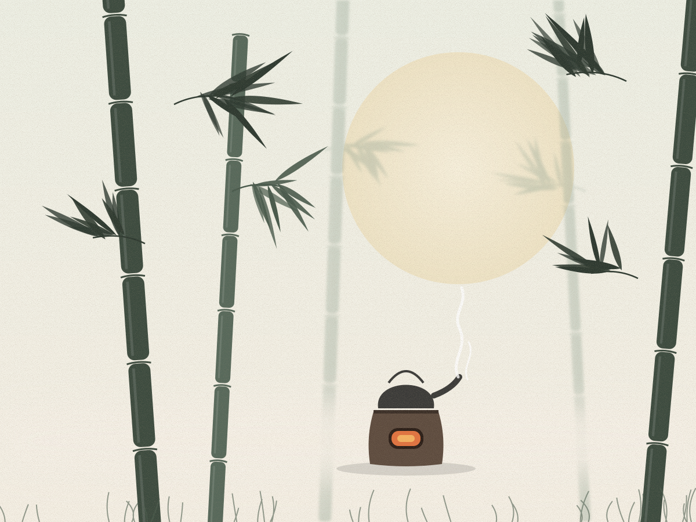

茶
茶韵
中国茶文化
首页
茶史渊源
茶韵图集
名茶列表
留言板
首页
/
茶韵图集
茶韵图集
以插画的方式，记录茶山、茶器与茶事里的东方美学。点击任意图片即可放大欣赏。
全部
茶山
茶器
茶事
共
12
幅作品 · 点击图片查看大图
云岭茶山
茶山
紫砂月下
茶器
白瓷清茶
茶器
春日采茶
茶山
一芽两叶
茶山
建盏点茶
茶器
湖畔茶亭
茶事
茶经古卷
茶事
功夫茶具
茶器

竹林煮茗
茶事
茶垄晨光
茶山
围炉煮茶
茶事
1 / 12